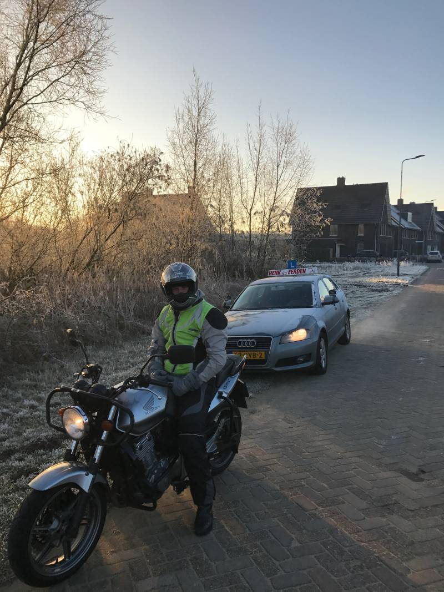
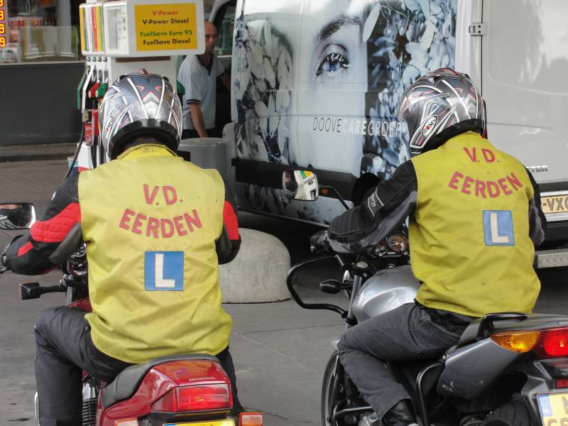
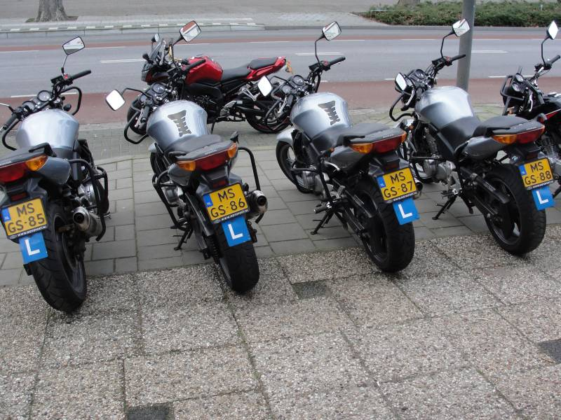

Over Henk
Motorgek sinds z'n veertiende. Nooit meer overheen gegroeid.
Sommige mensen kopen op hun vijftigste een motor omdat ze iets gemist hebben. Henk had op zijn veertiende al door dat hij niets anders wilde. Dat werd racen. En daarna: anderen leren rijden — al ruim dertig jaar.
Het verhaal
Van circuit naar Oude Vlijmenseweg
Zes jaar lang racete Henk op circuits in de Benelux. Daar leer je wat een motor doet op de grens — en vooral: hoe je ruim vóór die grens de baas blijft. Die kennis neemt hij elke les mee.
Vijfentwintig jaar geleden begon hij zijn eigen rijschool in Den Bosch. Sindsdien heeft hij honderden Bosschenaren op de motor gekregen. Zijn recept is nooit veranderd: veel kilometers, eerlijke feedback en de lat hoog.

De eerste motor
Motorpassie op je veertiende: te jong voor een rijbewijs, oud genoeg om te weten wat je wilt. Het bleef niet bij dromen — het werd sleutelen, rijden en alles opzuigen wat met motoren te maken had.
Circuitracen in de Benelux
Zes jaar wedstrijden op de circuits van de Benelux. Daar leer je remmen op het laatste moment, sturen met je hele lijf en vooral: respect voor de machine. Wie zo heeft leren rijden, laat zich in het verkeer niet snel verrassen.
Rij-instructeur
Van racer naar leraar. Ruim dertig jaar rij-instructie betekent: duizenden lesuren, elke denkbare verkeerssituatie voorbij zien komen — en precies weten hoe híj jou iets het snelst leert.
Eigen rijschool in Den Bosch
Al 25 jaar op de Oude Vlijmenseweg 81. Geen wisselende instructeurs, geen callcenter: je belt Henk, je krijgt Henk. Elke les weer.
“Streng? Ik noem het eerlijk. Het verkeer gaat je ook niet sparen.”
Henk van der Eerden
De aanpak
Even wennen. Daarna wil je niet anders.
Leerlingen zeggen het zelf: Henks directheid is in het begin even slikken. Maar wie doorzet, merkt dat er een hart voor de zaak achter zit — en vooral: dat je er beter van wordt.
- Direct, nooit persoonlijk. Feedback gaat over je rijden — en die krijg je meteen, niet drie lessen later.
- Streng met een hart. Toen een leerling ziek werd, kreeg ze alle ruimte om op haar tempo door te gaan. AVD in één keer gehaald.
- Spannend? Dan anders. Bang voor achtjes? Dan mag je eerst achterop om te voelen hoe het moet. Werkt altijd.
- Humor hoort erbij. Drie uur op de motor met iemand die zijn vak liefheeft — de lessen vliegen voorbij, zeggen ze allemaal.

Geslaagd? Dan begint het pas
Je eerste eigen motor — zonder gedoe
Rijbewijs binnen en meteen verder rijden? Henk verkoopt gebruikte motoren van € 1.000,- tot € 9.000,- — eerlijk beoordeeld door iemand die er zijn vak van maakt dat jij veilig rijdt.
- Drie maanden garantie op elke motor.
- Grote beurt vóór aflevering: accu, remblokken en kabels worden vernieuwd waar nodig.
- Technisch in zeer goede staat — geen onverwachte reparatiekosten, gewoon rijden.
- Advies van je eigen instructeur: Henk weet precies welke motor bij jouw rijstijl past.

Kom kennismaken
Eén blok van drie uur en je weet of motorrijden — en Henk — bij je past. Eerlijk antwoord gegarandeerd.